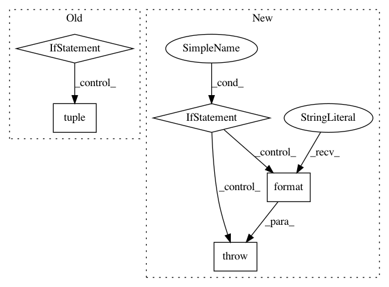

979b8c9efa551e8c948a4aca145367a2d87ac8d6,gpytorch/distributions/multitask_multivariate_normal.py,MultitaskMultivariateNormal,rsample,#MultitaskMultivariateNormal#Any#Any#,95
Before Change
def rsample(self, sample_shape=torch.Size(), base_samples=None):
if base_samples is not None:
// Make sure that the base samples agree with the distribution
if tuple(self.mean.size()) != tuple(self.mean.size()[-self.mean.dim() :]):
raise RuntimeError(
"The size of base_samples (minus sample shape dimensions) should agree with the size "
"of self.mean. Expected ...{} but got {}".format(self.loc.size(), base_samples.size())
)
sample_shape = torch.Size(tuple(base_samples.size(i) for i in range(base_samples.dim() - self.mean.dim())))
base_samples = base_samples.view(*sample_shape, *self.loc.shape)
samples = super(MultitaskMultivariateNormal, self).rsample(sample_shape=sample_shape, base_samples=base_samples)
After Change
// Make sure that the base samples agree with the distribution
mean_shape = self.mean.shape
base_sample_shape = base_samples.shape[-self.mean.ndimension() :]
if mean_shape != base_sample_shape:
raise RuntimeError(
"The shape of base_samples (minus sample shape dimensions) should agree with the shape "
"of self.mean. Expected ...{} but got {}".format(mean_shape, base_sample_shape)
)
sample_shape = base_samples.shape[: -self.mean.ndimension()]
base_samples = base_samples.view(*sample_shape, *self.loc.shape)
samples = super().rsample(sample_shape=sample_shape, base_samples=base_samples)
In pattern: SUPERPATTERN
Frequency: 3
Non-data size: 5
Instances
Project Name: cornellius-gp/gpytorch
Commit Name: 979b8c9efa551e8c948a4aca145367a2d87ac8d6
Time: 2019-02-26
Author: balandat@fb.com
File Name: gpytorch/distributions/multitask_multivariate_normal.py
Class Name: MultitaskMultivariateNormal
Method Name: rsample
Project Name: mne-tools/mne-python
Commit Name: 705e0be293dbfd56694ce04ca0b606cce3dbfaea
Time: 2020-02-10
Author: dan@mccloy.info
File Name: mne/utils/check.py
Class Name:
Method Name: _check_pandas_index_arguments
Project Name: stanford-mast/nn_dataflow
Commit Name: 4fb88fdc63292d93ce2fdbbf77a4043f18b2c769
Time: 2017-05-03
Author: mgao12@stanford.edu
File Name: nn_dataflow/Network.py
Class Name: Network
Method Name: add